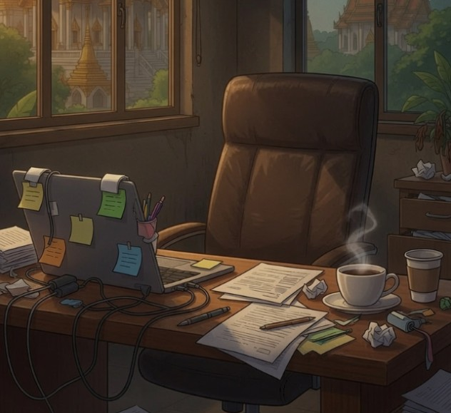

About
Thailand, off the meter

ThaiThuk is an independent, English-language magazine about Thailand — its culture, food, festivals, coastal towns, Northeast heartland and the everyday generosity of its people. We publish long-form features, practical travel updates and a friendly community forum, alongside a family of free tools that help visitors plan, budget and learn.
Our point of view — stated openly
We love Thailand, and we don't pretend otherwise. ThaiThuk is a celebration of the kingdom, written the way good travel and culture magazines have always been written: with affection, curiosity and a clear point of view. We are not a newspaper of record, and we don't claim to be.
Our standards
Affection is not a license to mislead, so we hold ourselves to a few firm rules. Anything we publish as fact is sourced, and news briefs link to the original reporting. When we cover ongoing legal cases, we report only what has been established, use "alleged" where courts have not yet ruled, and respect the presumption of innocence. We correct errors promptly and visibly. Opinions and enthusiasms are clearly written as such. And we disclose our connections: the tool sites we recommend — ThaiVisaFinder, ThaiHolidayBudget, ThaiLetters, ThaiLotteryNumbers and ThaiTripPlanner — are part of our own network.
Who we are
ThaiThuk is published independently by a small team of writers and contributors in Thailand and abroad — Thai voices and long-term residents who know the difference between visiting a country and listening to it. Contributor bios appear on their articles as the roster grows. If you'd like to write for us, especially if you can bring Isan, Southern or Northern perspectives in your own voice, we'd love to hear from you.